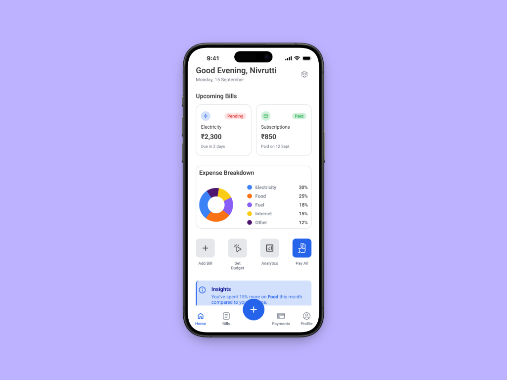
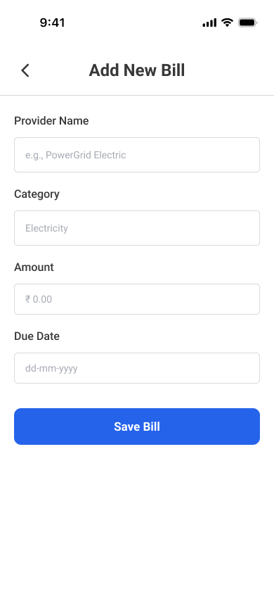
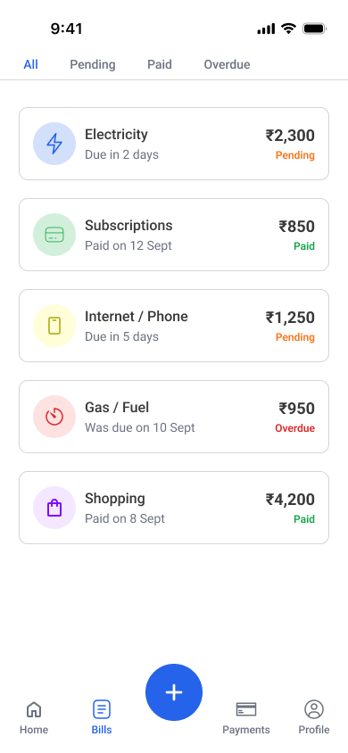
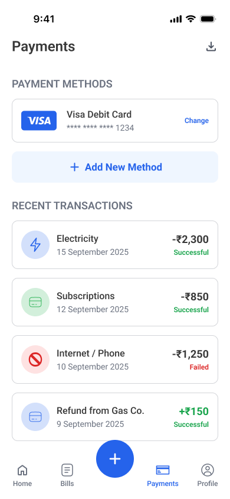
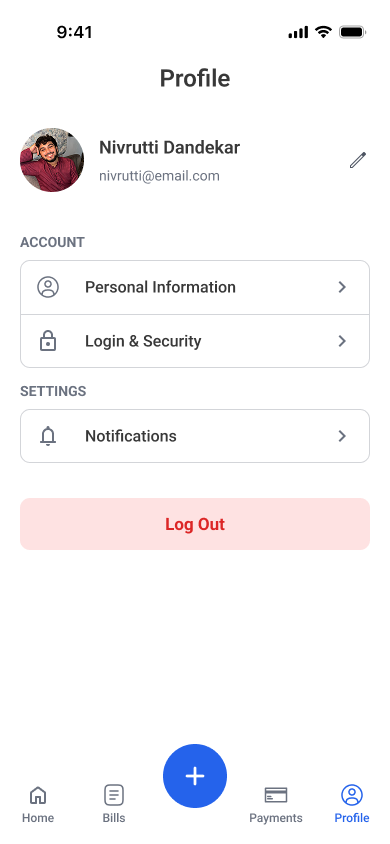

Utility Pay
Utility Pay is a mobile application concept designed to simplify how people manage and pay their everyday utility bills. Many users have to manage multiple platforms to pay for services like electricity, water, internet and phone bills. This creates friction, increases the risk of missed payments and makes it difficult to track monthly expenses. Utility Pay aims to solve this by providing a centralized platform where users can track, manage and pay all their utility bills from one place.
Problem Statement
Managing multiple utility bills can be frustrating. Users often have to visit different apps or websites to pay electricity, water, internet and other service bills. This fragmented experience makes it difficult to stay organized and increases the chances of missing payments.
Key Issues Identified
- Utility bills are spread across multiple platforms
- Users struggle to track upcoming payments
- Payment reminders are inconsistent
- No centralized overview of monthly utility expenses
Design Goals
The design focused on simplifying bill management and improving financial visibility.
- Create a centralized utility dashboard
- Make upcoming bills easy to see and prioritize
- Simplify the payment process
- Provide a clear overview of monthly utility spending
- Reduce friction in everyday financial tasks
Research & Insights
To understand common issues with bill management, I analyzed existing payment apps and common user behaviors related to recurring payments.
- Users prefer seeing all upcoming bills in one place
- Payment reminders are often missed or ignored
- Many apps prioritize payments over financial visibility
- Users want quick access to recurring actions
Ideation & Exploration
During ideation, the focus was on designing a simple system that makes mill management effortless. The product structure was built around three main ideas: Visibility (upcoming bills), Speed (fast payments) and Clarity (monthly spending).
- A unified dashboard for all bills
- Clear due data indicators
- Quick payment actions
- Monthly expense tracking
Final Design
The final design focuses on creating a simple and intuitive bill management experience with a centralized dashboard showing all utility bills, clear due-date indicators, quick payment functionality and a monthly spending overview. The interface was designed to reduce visual clutter while making important information immediately accessible.
- Faster bill payments
- Better financial organization
- Reduced risk of missed payments
- Clear visibility of monthly utility expenses





Reflections & Learnings
This project helped me explore designing financial tools that simplify everyday tasks. Through this process, I learned the importance of designing for recurring user behavior, prioritizing clarity in financial interfaces and reducing friction in multi-step processes. If I were to expand this project further, I would conduct user interviews and usability testing to better understand how people currently manage their utility payments.